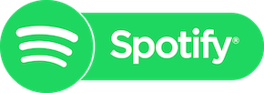

Spotify est un service suédois de streaming
musical sous la forme d'un logiciel
propriétaire et d'un site web. Cette
plateforme de distribution numérique
permet une écoute quasi instantanée
de fichiers musicaux.
qui arrive en tête de liste. En effet,
j’écoute de la musique depuis toujours,
presque tous les joursque ce soit de la
Techno, du rap US ou Français, de Bob
Marley à Serge Gainsbourg, il y’en a pour
tous les goûts avec Spotify.
Shazam est un logiciel propriétaire de
reconnaissance musicale de chansons
développé par une entreprise basée à
Londres. ShazamEntertainment Limited
a été créé en 1999 par Chris Barton,
Philip Inghelbrecht, Avery Wang et Dhiraj
Mukherjee.
Shazam? Ma deuxième application favorite,
pour trouver le titre des bons sons qui
passent en soirée appart ou dans les séries Netflix.
Uber Eats est un service de livraison de plats
cuisinés lancé par Uber en 2015 et basé
à San Francisco, en Californie. Les commandes
sont prises via l'application mobile ou le
site web de Uber Eats auprès des restaurants
partenaires et sont livrées par des coursiers
indépendants.
J’ai évoqué Netflix auparavant, mais quoi de
mieux que de se faire livrer à domicile avant
de regarder Pinky Blinders le dimanche, quand
on est en bonne compagnie?